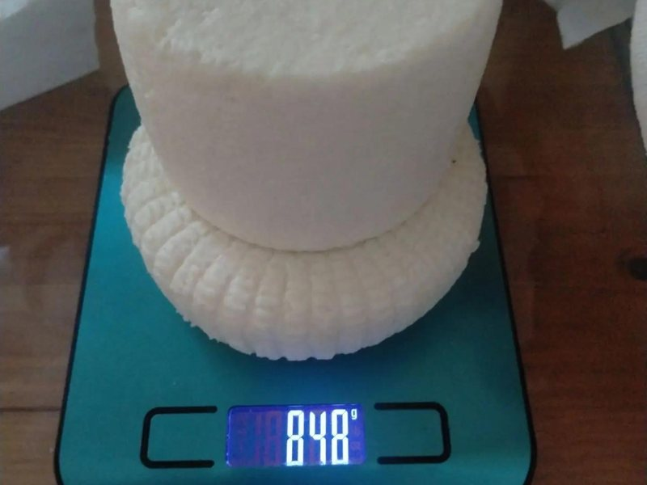
Адыгейский
Нежный свежий сыр с мягким молочным вкусом.
- Подача
- к завтраку, жарить, в салат
- Хранение
- 5 дней в холодильнике
- Готовлю
- 1–2 дня
350 ₽ / 300 г
Натуральные сыры из фермерского молока — к вашему семейному столу. Небольшие партии, ручная работа, честный состав.
Санкт-Петербург · Калининский район · доставка по городу
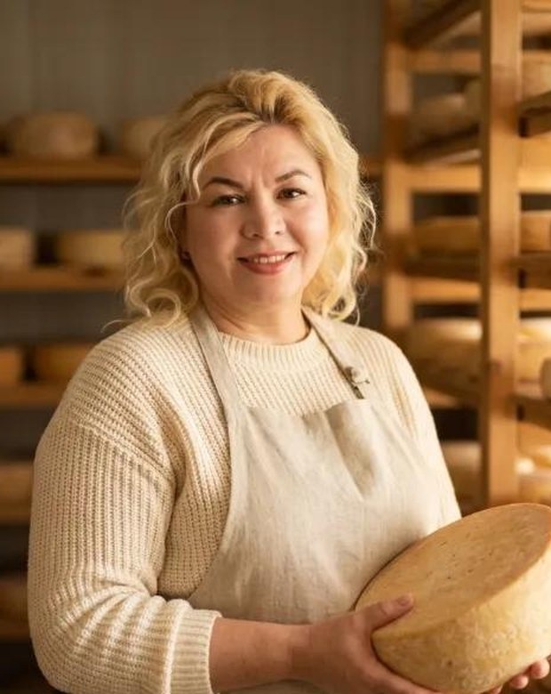
Около года назад я начала варить сыр для своей семьи — хотелось точно знать, что мы едим. Сейчас этот сыр заказывают и другие семьи Санкт-Петербурга.
По профессии я повар-пекарь, есть действующая медицинская книжка. Работаю небольшими партиями: фермерское молоко из Гатчины жирностью 4,4–4,5 %, натуральные закваски, обязательная пастеризация, без консервантов и заменителей молочного жира.
С заботой, Марина
Молодые сыры готовлю за 1–2 дня, выдержанные — под заказ. Напишите, что приготовлено сегодня, или закажите любимую позицию заранее.

Нежный свежий сыр с мягким молочным вкусом.
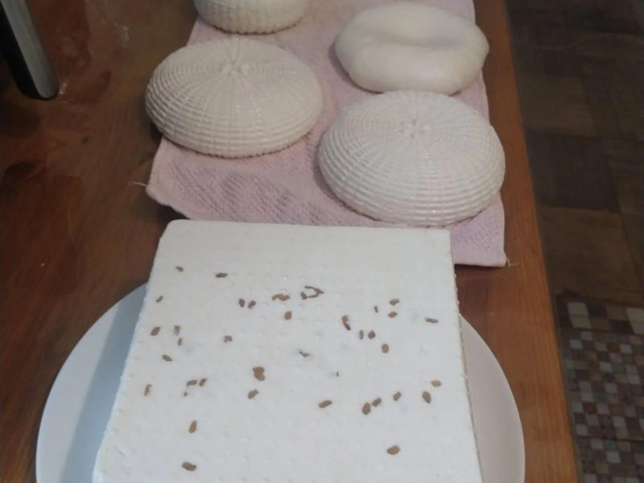
Выразительная солёность и плотная, аппетитная текстура.
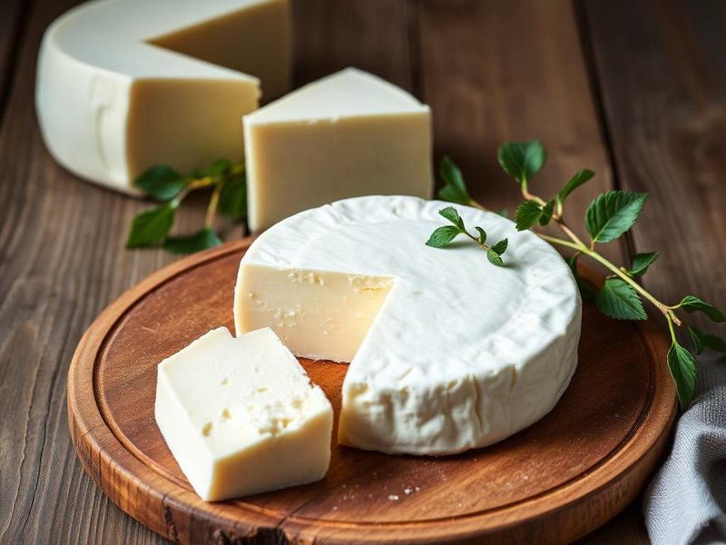
иллюстрацияКремовая, насыщенная, идеальна для греческого салата.
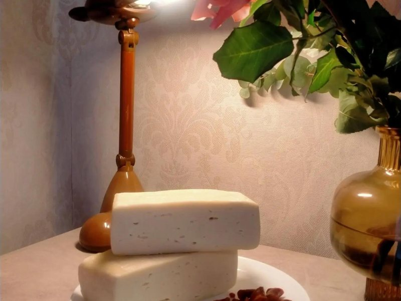
Мягкий полутвёрдый сыр с деликатным вкусом и красивой корочкой.
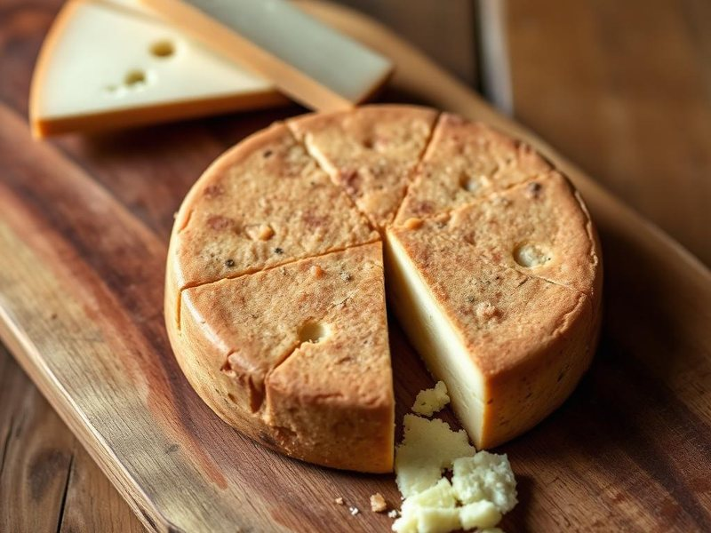
иллюстрацияТёплый ореховый аромат и грибные нотки — авторский рецепт.
Плотный сыр, который держит форму на сковороде и гриле.
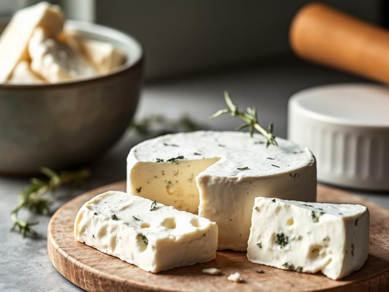
иллюстрацияМягкий, гладкий, слегка сливочный — намазать или в десерт.
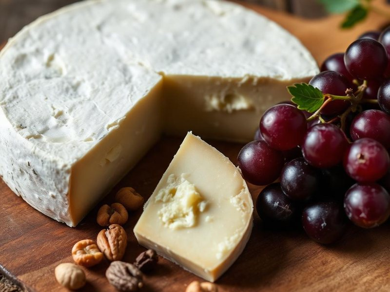
иллюстрацияДля тех, кто не переносит лактозу — тот же чистый вкус.
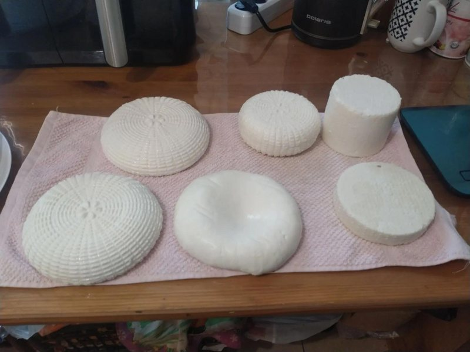
Ассортимент меняется по сезону — спросите, что приготовлено сегодня, или закажите желаемый сыр заранее.
Цены, вес и сроки указаны предварительно — идёт наполнение каталога. Актуальные — при оформлении заказа.
Охлаждённое фермерское молоко приезжает в небольших вёдрах. Я проверяю каждую партию, обязательно пастеризую и только потом начинаю варить — спокойно, чисто и внимательно.
Молоко приезжает с фермы охлаждённым, чтобы сохранить качество и натуральный вкус.
Проверяю молоко и пастеризую его перед работой — это основа безопасного процесса.
Закваска, фермент, сырное зерно, формовка и созревание — так рождается настоящий сыр.
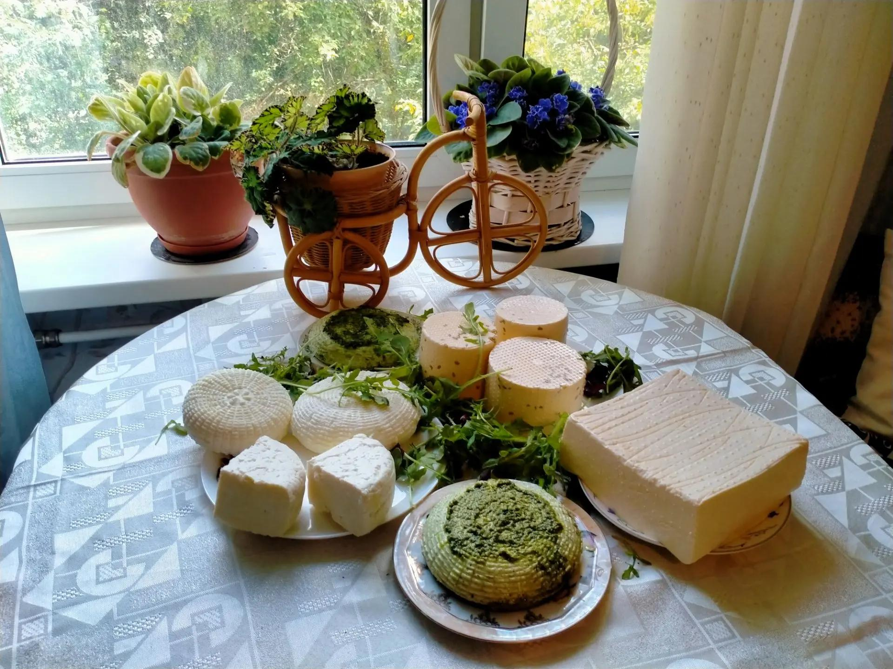
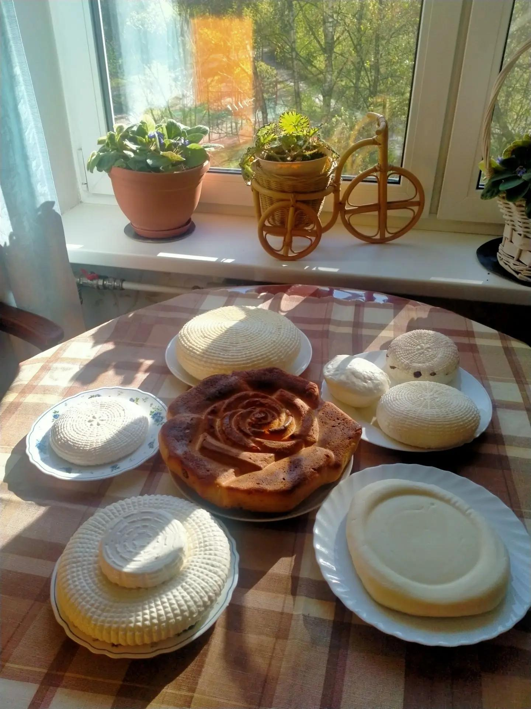
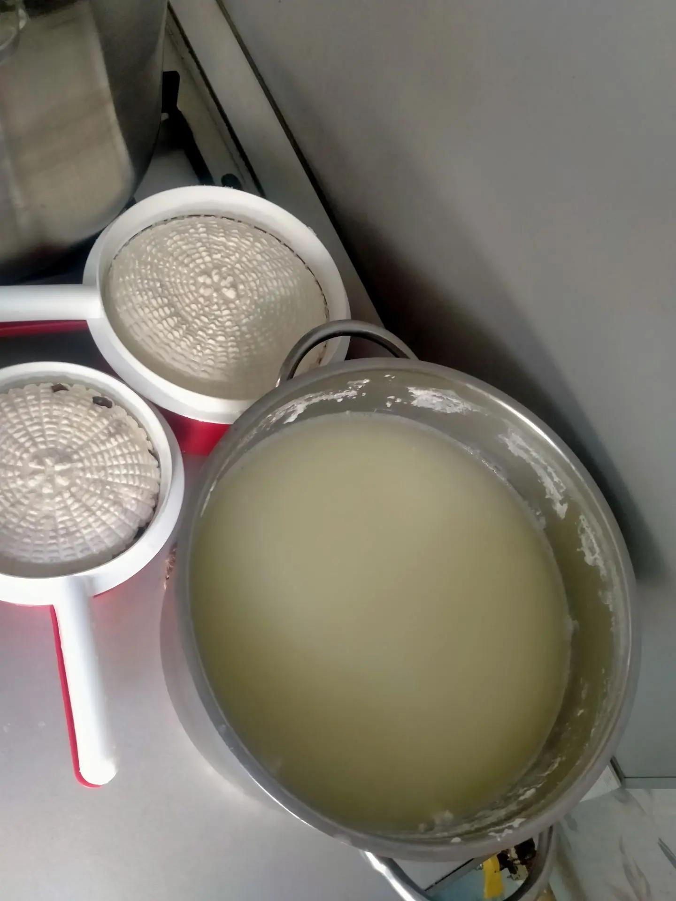
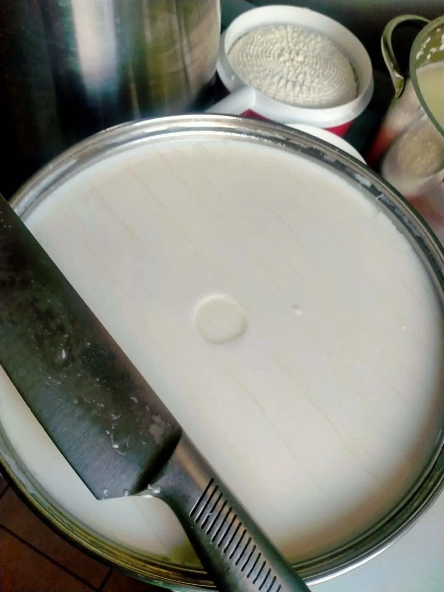
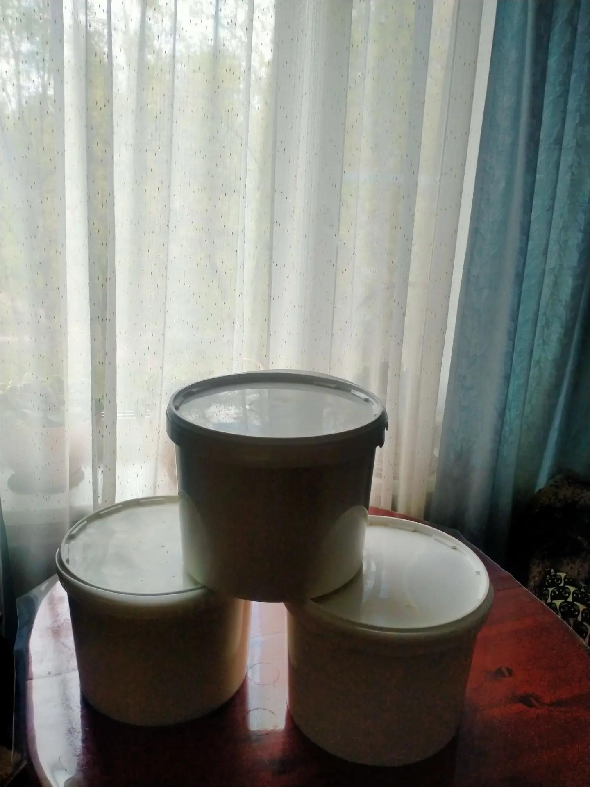
Я сотрудничаю с этой семейной фермой и делюсь их каналом. У Анны своё мясо-молочное хозяйство и большой ассортимент — они из немногих, кто обслуживает весь Петербург. Уникальная семья: Анна и её многонациональная команда — трудолюбивые и честные.
Молоко жирностью 4,4–4,5 %, охлаждённое. Качественное питание — это здоровье наших близких. Заходите, пробуйте. Будьте здоровы.
Канал фермы в MAXМолоко, закваска, фермент, соль. Без консервантов, заменителей молочного жира и красителей.
Готовлю вручную под заказ, поэтому сыр свежий, а вкус и структура — живые.
Мягкие несолёные сыры, которые едят дети, и безлактозные варианты для чувствительных.
«Сыры Марины — это вкус дома: чистый, свежий, живой. Магазинные мы почти перестали покупать.»
«Рекомендую клиентам с непереносимостью лактозы. Состав прозрачный, вкус — как должен быть у настоящего сыра.»
Да. Варю сама небольшими партиями в Санкт-Петербурге. Молоко — фермерское охлаждённое, обязательно пастеризую перед варкой.
Срок указан в карточке каждого сыра. Молодые сыры — 4–5 дней, в рассоле до 14 дней, выдержанные — до 21 дня в холодильнике.
Да, соберу мини-набор на пробу из текущих позиций.
Да, это отдельная позиция в каталоге, готовлю за 2–3 дня.
Молоко всегда пастеризуется. Среди позиций есть мягкие несолёные сыры — адыгейский, творожный, панир, — которые обычно подходят детям. Возраст введения конкретного продукта уточняйте у педиатра.
Сыр — товар особенный, и если он пришёл свежим, в срок годности и в целой упаковке, вернуть его после покупки, к сожалению, нельзя — так устроены правила для продуктов питания. Поэтому если что-то смущает до заказа — лучше спросить заранее в Telegram или через форму, помогу выбрать. А если в продукте оказался явный недостаток — например, скрытая плесень или упаковка была повреждена не по вашей вине, — напишите в течение 24 часов с момента получения на oleynikova_27_06@mail.ru с фото товара, этикетки и чеком. Посмотрю внимательно и решим вопрос.
Напишите мне — отвечу в течение дня и помогу выбрать
Напишите, что интересует — отвечу и помогу выбрать. Заявка ни к чему не обязывает.
Открылся WhatsApp с вашей заявкой — нажмите «Отправить», и я отвечу в течение дня. Не открылся? Напишите на +7 917 869-46-65 в WhatsApp или в Telegram-канал.